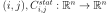
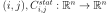
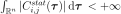
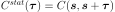
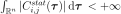
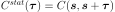
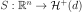
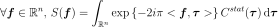
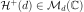

SpectralModelFactory¶
(Source code, png, hires.png, pdf)
{kind=link}
{kind=link}
- class SpectralModelFactory(*args)¶
Base class for spectral model factory.
- Parameters
- mySpectralModelFactoryImplementation
SpectralModelFactoryImplementation One spectral factory algorithm.
By default, the Welch factory algorithm
WelchFactory.
- mySpectralModelFactoryImplementation
Notes
Let
 be a multivariate second order stationary process, with zero mean, where
be a multivariate second order stationary process, with zero mean, where  . We only treat here the case where the domain is of dimension 1:
. We only treat here the case where the domain is of dimension 1:  (n=1).
(n=1).If we note
 its covariance function, then for all  is
its covariance function, then for all  is  (ie ), with  as this quantity does not depend on
(ie ), with  as this quantity does not depend on  .
.The bilateral spectral density function  exists and is defined as the Fourier transform of the covariance function
 :
:
where  is the set of d-dimensional positive definite hermitian matrices.
Depending on the available data, we proceed differently :
-if the data correspond to several independent realizations of the process, the estimation is done using the empirical estimator;
if the data correspond to one realization of the process, we suppose the process is ergodic to split the realization into several ones.
Methods
build(*args)Estimate the spectral model from data.
Accessor to the object's name.
Accessor to the FFT algorithm used for the Fourier transform.
getId()Accessor to the object's id.
Accessor to the underlying implementation.
getName()Accessor to the object's name.
setFFTAlgorithm(fft)Accessor to the FFT algorithm used for the Fourier transform.
setName(name)Accessor to the object's name.
- __init__(*args)¶
- build(*args)¶
Estimate the spectral model from data.
- Available constructors:
build(myTimeSeries)
build(myProcessSample)
- Parameters
- myTimeSeries
TimeSeries The time series from which the spectral model is estimated.
- myProcessSample
ProcessSample The sample of time series from which the spectral model is estimated.
- myTimeSeries
- Returns
- mySpectralModel
SpectralModel The estimated spectral model.
- mySpectralModel
- getClassName()¶
Accessor to the object’s name.
- Returns
- class_namestr
The object class name (object.__class__.__name__).
- getFFTAlgorithm()¶
Accessor to the FFT algorithm used for the Fourier transform.
- Returns
- fftAlgo
FFT The FFT algorithm used for the Fourier transform.
- fftAlgo
- getId()¶
Accessor to the object’s id.
- Returns
- idint
Internal unique identifier.
- getImplementation()¶
Accessor to the underlying implementation.
- Returns
- implImplementation
A copy of the underlying implementation object.
- getName()¶
Accessor to the object’s name.
- Returns
- namestr
The name of the object.
- setFFTAlgorithm(fft)¶
Accessor to the FFT algorithm used for the Fourier transform.
- Parameters
- fftAlgo
FFT The FFT algorithm used for the Fourier transform.
- fftAlgo
- setName(name)¶
Accessor to the object’s name.
- Parameters
- namestr
The name of the object.